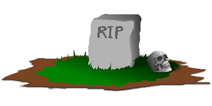

Over ons
Team 31
over onze website
Hallo! Wij zijn Victor, James en Gerrit. Op deze site kun je informatie over ons vinden en vertellen wij wat over Tesla en SpaceX.
Dit zijn (waren) allemaal projecten van Elon Musk. Ookal hebben sommigen van ons geen affectie met ELon Musk, wordt het toch geforceerd te doen :).
Over team 31
Victor heeft een hond en houdt van lange wandelingen over het strand. Het liefst loopt hij de zonsondergang tegemoet
met een blik pils en zijn favoriete liedje op de achtergrond: "Culture club - Karma Chameleon".
James is een lompe boer uit het noorden van het land. Op zijn aardappelboerderij kweekt hij al jaren lang aardappels.
Wist je dat aardappels een diameter kunnen krijgen van wel 21 centimeter?! Geweldig!
Verder vindt James het geweldig om zichzelf in te smeren met vaseline en te doen alsof hij een een slak is.
Gerrit heeft de groep verlaten. Gerrit is weg, groep is verdrietig

RIP Gerrit 2018-2018